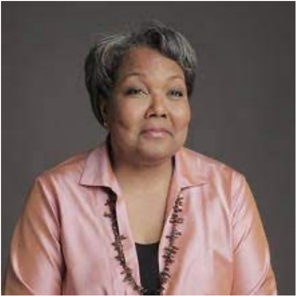
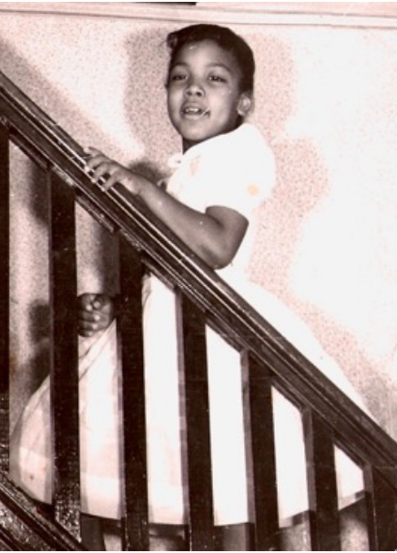
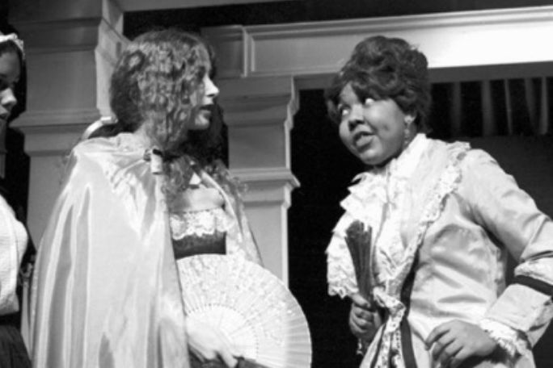
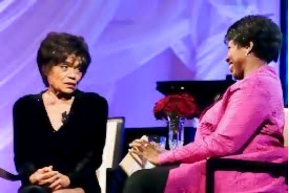
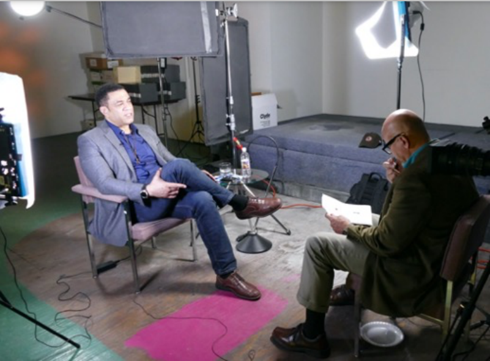
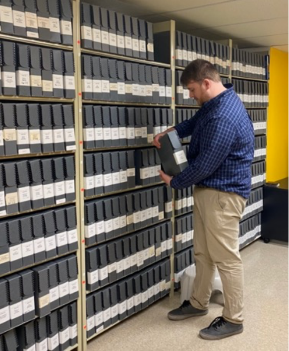
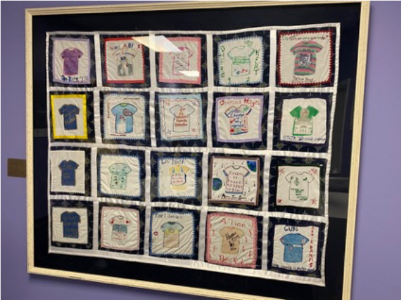
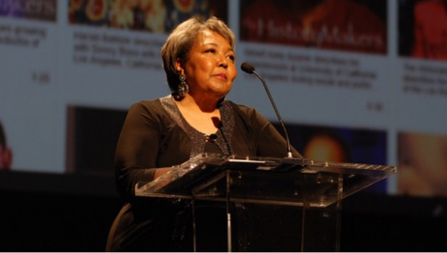

What do Timuel Black, Ernie Banks, Harry Belafonte, Barak Obama, and Ruby Dee plus 3400 other leading African Americans have in common? Their three-hour video interviews populate the Library of Congress archive, thanks to the vision of one woman, Julieanna Richardson.
Actress, lawyer, Black oral historian, and founder of The HistoryMakers archive, Julieanna Richardson is following a dream that began when she was, in her words, “a little Black girl… in Newark, Ohio.”

Growing up as the only student of color in her elementary school class, she didn’t think “history” applied to people who looked like she did. All she knew was that Tuskegee Institute’s George Washington Carver did a lot with peanuts and that Blacks had been slaves. In her recent TEDx talk she recalled, “So to my nine-year-old brain those two facts together did not compute.How could he have done all those things with peanuts when all we had been were slaves?” Her teacher asked the class to talk about their family backgrounds. Their responses ranged from Italian-American to German-American. She felt she needed a hyphen too and mumbled “negro” and “Native American” because she knew many Blacks assumed they had Native American blood. She added “French” because her father had been to France in the military where he saw Josephine Baker perform. Richardson’s creative performance was the first of many.

Attending Michigan’sInterlocken Arts Academy for high school, Richardson loved performing. “I had started with drama in a 9th grade competition and won first place.” She wanted to go to Juilliard, but her parents said she would go to a liberal arts college. She compromised by attending Brandeis University as a theater major. Richardson, encouraged by her parents,saw the reality of making it in theater as a black female, and switched to American studies.

At Brandeis, Richardson was acutely aware of how the Jewish identity was celebrated and honored, in a way she could not envision her own identity. During her sophomore year, she was doing research for an independent project on the Harlem Renaissance in New York’s Schomburg Library, devoted to Black culture. Listening to music written by the Black songwriting teamof Noble Sissle and Eubie Blake,she heard “I’m just mad about Harry,” from the 1921 production of “Shuffle Along” on Broadway. She had always known the song as President Truman’s campaign song! “It was a defining moment,” she recalled, “If you don’t have a place to call your own or a legacy to call your own, or a history to call your own, you’re sort of flailing out there in society,” she said. “[At that moment] I could have flown around the streets of Harlem! I was totally in my element; it really defines the History makers… one story leading to another…I can’t tell you how joyful I felt! I had a history to call my own!” Continuing her research, she interviewed Black actors Butterfly McQueen, Leigh Whipper, who was the oldest living Black actor at the time, historian John Henrik Clarke and tap dancer Honi Coles, foreshadowing her future vocation. “The fact that I had lied in elementary school stayed with me until that point.”
Graduating Summa Cum Laude, Richardson followed her father’s urging and went on to Harvard Law School. She joined the prestigious Chicago law firm of Jenner and Block but only with the promise she could work in the arts arena. “I got very involved with Lawyers for the Creative Arts….I was the first Black female in [Jenner and Block’s] corporate law department…but I wasn’t getting the assignments the men were getting. I didn’t really want to practice law,so I said I’m done.” Two years later, she was cable administrator with the city’s developing cable industry. Her entrepreneurial instincts blossomed, and she started one of the first home shopping channels, and then set up her own production company, SCTN Teleproductions, specializing in corporate videos, cable TV programming and new media.
After a cable restructuring, Richardson began looking for a new adventure. At an American Bar Association meeting in Memphis, she heard a panel of Black leaders talking about Martin Luther King but realized that the panelists who had worked with King were not as well-known as King. She had an epiphany; the name HistoryMakers came to her. Back in Chicago she called her close friend, Katherine Lauderdale, then legal counsel for WTTW (now Chief Legal Officer at PBS) and said “Katherine, I know exactly what I want to do! It’s called The HistoryMakers, and it’s going to be an archive of Black people!”
Three of her friends assembled on a Saturday – in her words, “to have an intervention.” “They asked me ‘what are you envisioning?’ They asked me two specific questions. ‘Does an archive like this exist already, and if it doesn’t, then would anyone be interested? We theorize no.’ It was up to me to answer those questions.” The only comparable effort was the WPA’s recordings of former slaves during the 1930s. Richardson was undeterred. “I started on my dining room table… I had to self-fund at the beginning, and I did a lot of research… I started talking to people… people said you should check out the Shoa Foundation (Steven Spielberg’s archive of Holocaust survivors).” An early grant from the McCormick Foundation would help her move forward.
Knowing she had to raise money continually, she came up with the idea of celebrities interviewing celebrities for a fundraising television show. The first one, held at the Art Institute, featured Danny Glover interviewing Harry Belafonte. “If I had not had the equipment from my cable days, I would not have been able to get started,” she said. The annual program, broadcast on PBS until Covid hit, would eventually feature the late news anchor Gwen Ifill as the regular interviewer of newsmakers from Valerie Jarrett to Smokey Robinson. The shows are available to watch on The HistoryMakers website (www.TheHistoryMakers.org).

The scope of The HistoryMakers today was hardly imagined by her “interventionist” friends twenty plus years ago. Even the largest dining room table could not manage 3400 interviews, 11,000 hours of interviews, and associated personal materials. Access to the full archive is now available to the public through 185 universities and public libraries, including University of Chicago, University of Illinois, and the Chicago Public Library. The original interviews are now housed in the Library of Congress and individually indexed for easy access.

Richardson’s vision is to make the archive not only widely available but also as complete as possible. In addition, the archive collects and is in the process of digitizing personal papers from its subjects. One of the significant problems Richardson unearthed was that 95% of those interviewed planned no autobiography or had made no arrangements to preserve their papers. The HistoryMakers encourages its subjects to connect with the many institutions that collect African American materials. It also trains minority archivists at Yale, Harvard, and Emory universities.

With the ultimate goal of education, The HistoryMakers provides a wide range of educational resources in addition to the archive itself. For K-12, there are lesson plans, contests, and examples of how classrooms use the digital material. Partnerships with colleges and universities also provide lesson plans, fellowship programs, and train Student Brand Ambassadors. The profiled History Makers themselves also often visit schools. The late Chicago author, educator, and activist Timuel Black visited Lincoln Park High School and is one of several Black leaders honored in a student-made quilt given to The HistoryMakers.

These high quality, archival quality videotaped interviews are expensive to produce, store, and make available. Although Richardson has raised over $36,000,000 in 22 years, it has never been easy. “Money raising has been extremely difficult…foundations have really not supported us. We’re an archive and we’re a standalone archive; originally, I wanted to be associated with a university… oral history has become popular now, but then it was not accepted in the academy … a lot of people thought it was sort of a flight of fancy.”

Academic credibility is no longer an issue. University licenses to the archive are important to covering operating expenses. Once she successfully licensed the archive to one university, she told her board, “we have a revenue stream! ‘Oh please,’ they said; my board thought I had lost my mind.” Richardson again pressed forward. Such licenses today generate over $1,000,000.
“Look at the time we’re living in…I want people to know we are doing really important work and that the work that should be supported. We’re on the fringes; we’re not a museum and we’re not a library, people understand those concepts. We have tremendous ability to educate. Our goal is to rescue the 20th century before it’s too late.”
“I’m hoping we can serve a beacon for other lost American stories… I’m really hoping we can raise the social and cultural equity of the Black community to where it should be, and I really hope that no child will ever feel the way I felt in that classroom.”